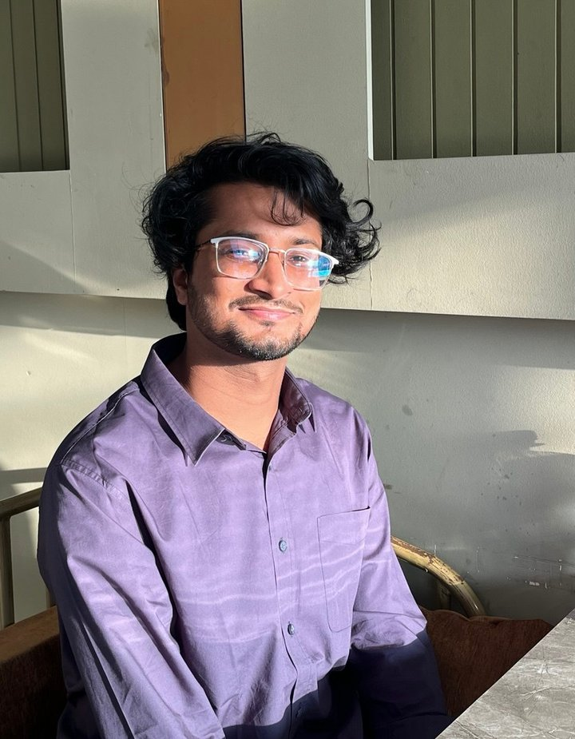

Sales Executive
Intelio Labs, software startup · Remote
- Identify and qualify prospects for web, software and AI projects.
- Present product demos and prepare proposals for clients.
Dhaka, Bangladesh
CSE student · Sales Executive at Intelio Labs
I build machine learning and full-stack projects. Below is what I've made so far.

Things I've built, all on GitHub
Fine-tuned an EfficientNet-B6 model that sorts waste photos into 10 classes, with a Gradio demo.
Students-only bike ride-sharing for UIU. It began as a full SRS and Figma prototype and is now a working app with verified accounts, ride matching, driver approval, fare chat, ratings and an admin dashboard.
A farmer-to-buyer marketplace with chat, disease alerts and price trends. Database triggers and transactions keep orders consistent.
Share a song and the story behind it. A community feed with likes and reports and light and dark themes.
A short intro
I'm a Computer Science and Engineering student at UIU, majoring in Artificial Intelligence and Data Science. I learn best by building, so most of what I know comes from projects: an image classifier, a farmer marketplace, a campus bike-sharing app and a music-sharing app.
In November 2026 I started as a Sales Executive at Intelio Labs, a software startup, where I work with clients and projects instead of just code.
I'm also at the very start of my final year project, in a group of five, on the security of retrieval-augmented language models, including Bangla text. We're still reading papers, so there's nothing to show yet.
Where I have worked
Intelio Labs, software startup · Remote
UIU Entrepreneur Development Forum, Dhaka
Where I studied
United International University, Dhaka · Major in Artificial Intelligence and Data Science
CGPA 3.70 / 4.00
Major General Mahmudul Hasan Adarsha College, Tangail
GPA 5.00 / 5.00
Police Lines Adarsha High School, Tangail
GPA 4.94 / 5.00
What I use to build
Recognition at UIU
Say hello, or tell me about something you're building